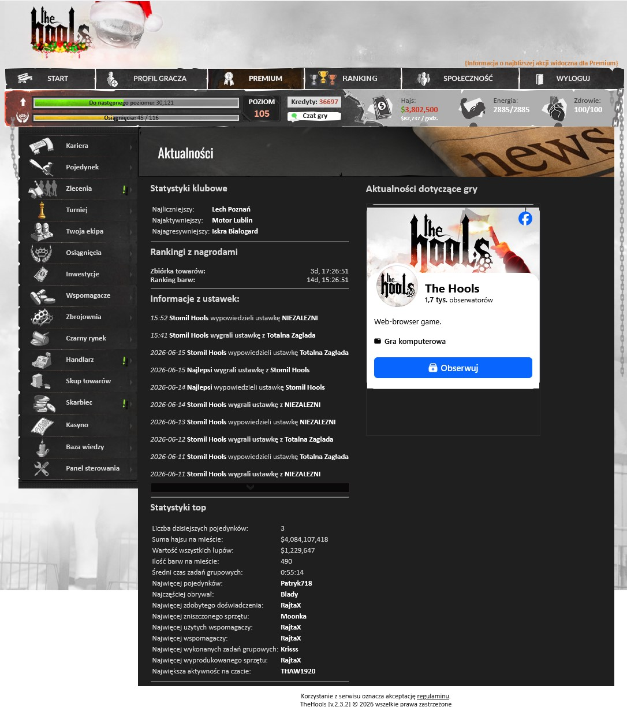
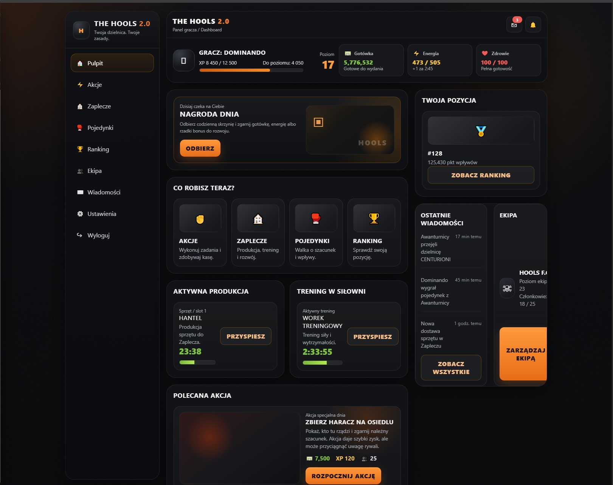
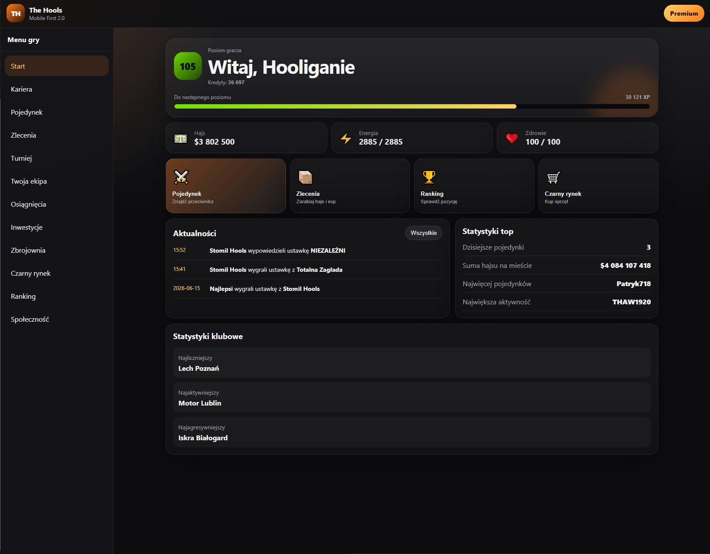
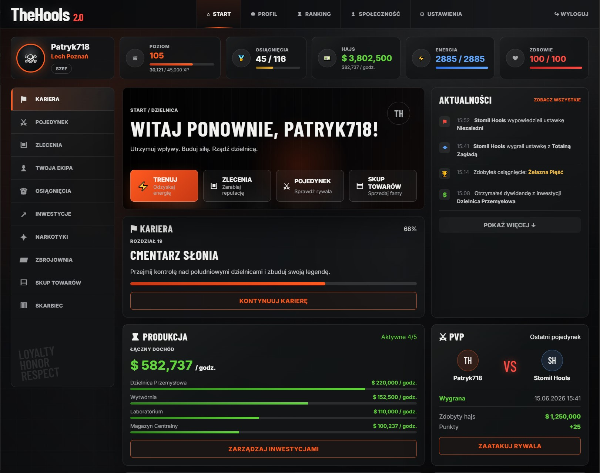
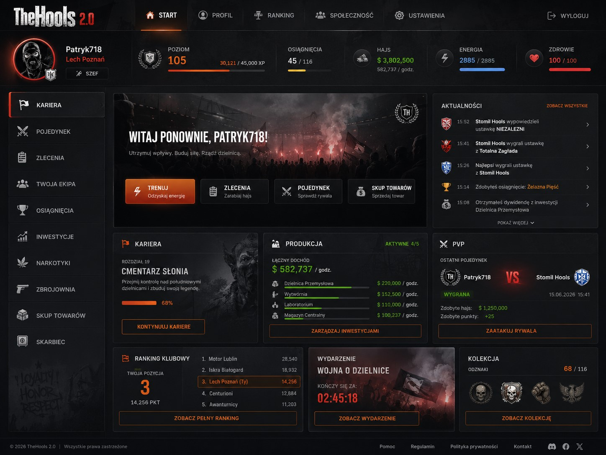
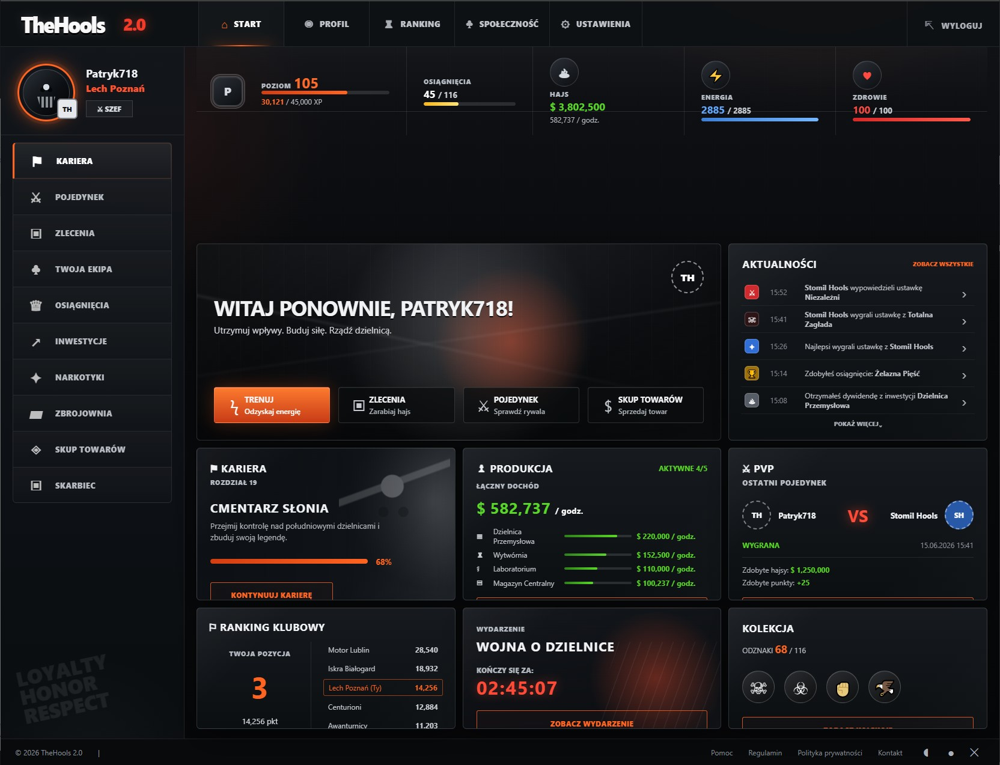

Wybierz wersję prototypu

Obecna wersja
Prototyp v.1
Prototyp v.2
Prototyp v.3
Prototyp v.4
Prototyp v.5Zagłosuj na najlepszy szablon
Sprawdź wszystkie wersje prototypu, a potem wybierz tę, która Twoim zdaniem najlepiej pasuje do The Hools 2.0. Możesz też dopisać własną opinię.